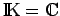
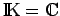

Inhalt Index DeskTop Bronstein

 Funktionalanalysis Stetige lineare Operatoren und Funktionale Fortsetzung von linearen Funktionalen
Funktionalanalysis Stetige lineare Operatoren und Funktionale Fortsetzung von linearen Funktionalen


Sei  ein Vektorraum über
ein Vektorraum über  und p eine Halbnorm auf
und p eine Halbnorm auf  . Seien ein linearer (komplexer, falls  und reeller, falls
. Seien ein linearer (komplexer, falls  und reeller, falls  ) Teilraum von
) Teilraum von  und f0 ein lineares (komplexwertiges, falls und reellwertiges, falls
und f0 ein lineares (komplexwertiges, falls und reellwertiges, falls  ) Funktional auf , welches der Bedingung
) Funktional auf , welches der Bedingung
genügt. Dann existiert ein lineares Funktional f auf  mit folgenden Eigenschaften:
mit folgenden Eigenschaften:
f ist die Fortsetzung des Funktionals f0 auf den gesamten Raum  unter Beibehaltung der Abschätzung (12.169).
unter Beibehaltung der Abschätzung (12.169).
Wenn ein linearer Teilraum eines normierten Raumes  ist und f0 ein stetiges lineares Funktional auf , dann ist eine Halbnorm auf
ist und f0 ein stetiges lineares Funktional auf , dann ist eine Halbnorm auf  mit (12.169), so daß sich sofort die Variante des Satzes von HAHN-BANACH über die Fortsetzung stetiger linearer Funktionale ergibt. Zwei wichtige Konsequenzen aus letzterem sind die ,,Reichhaltigkeit`` des dualen zu einem normierten Raum: Für jedes Element
mit (12.169), so daß sich sofort die Variante des Satzes von HAHN-BANACH über die Fortsetzung stetiger linearer Funktionale ergibt. Zwei wichtige Konsequenzen aus letzterem sind die ,,Reichhaltigkeit`` des dualen zu einem normierten Raum: Für jedes Element  gibt es ein Funktional
gibt es ein Funktional  mit und sowie den folgenden Sachverhalt: Für jeden linearen Teilraum und , mit dem Abstand , gibt es ein
mit und sowie den folgenden Sachverhalt: Für jeden linearen Teilraum und , mit dem Abstand , gibt es ein  mit
mit